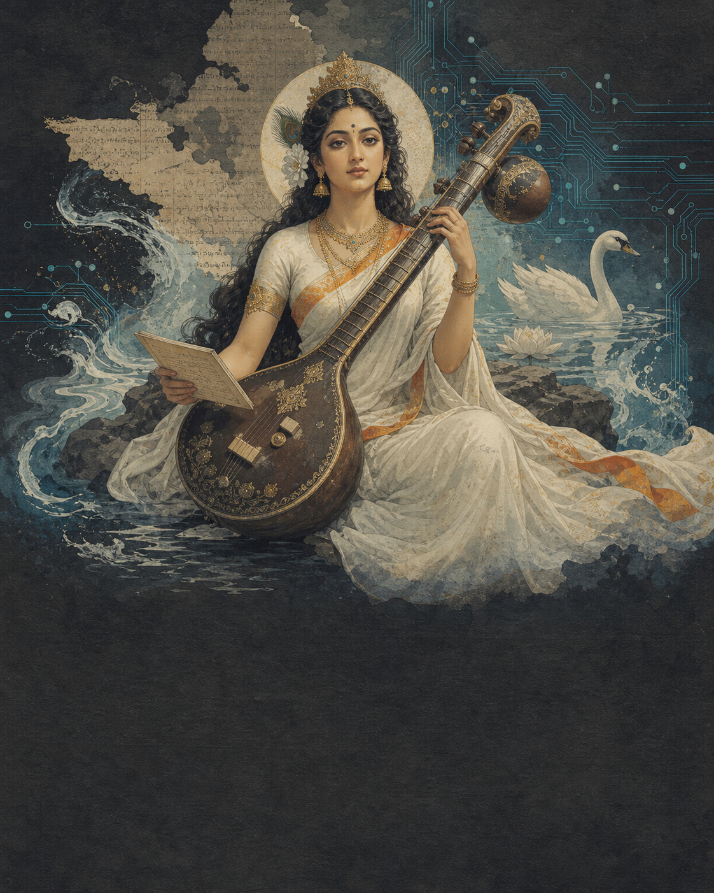

Two kinds of power.
I do not see my daughters every day. But every time we are together, they leave me with at least one question I am still thinking about after they go home. At seven, they ask why different gods hold different things. Why one sits on a flower. Why knowledge has music.
I was born into Hinduism, but their questions have made me study parts of it more carefully than I did as a child. Every answer seems to produce another question. I have spent more time following the strange side paths of those conversations than I care to admit.
Eventually I gave them a simple mnemonic: two kinds of power. Saraswati is associated with learning, speech, music, memory, and discernment. Lakshmi is associated with prosperity, abundance, good fortune, and flourishing. One asks what you understand. The other asks what you do with what you have.
That is not a complete map of Hinduism. Hindu traditions are plural, regional, and full of overlapping meanings. What I like about the frame is that one figure is never asked to carry every human need. Knowledge, prosperity, protection, destruction, and devotion can have different faces. The stories can disagree and still leave something useful behind.
The personal photograph belongs in this chapter before publication. The daughters remain part of the reason for the piece, not its promotional subject.

What if AI is polytheistic?
I encountered a modern version of this frame through Balaji Srinivasan and the Network School. His phrase is blunt: “AI is polytheistic, not monotheistic.” There may never be one all-knowing model. There are many models, built by different groups, with different strengths, limitations, values, and patrons.
That felt immediately familiar. In the Hindu frame, different forms of divinity help people think about different forces. You do not ask one symbol to explain everything. I now look at the frontier AI labs in a similar way: not one oracle, but a pantheon of imperfect intelligences. The model you choose matters. So does who built it, what it was trained to reward, and what you ask it to do.
The analogy is imperfect, but it gives me a better question than “Which AI wins?” What kind of power does this model offer—and what is missing from it? That is where the Saraswati and Lakshmi tests begin.
Balaji: AI is polytheistic, not monotheistic · The Network School
The Saraswati test and the Lakshmi test.
Choose a product, protocol, company, or policy. Answer these six questions honestly. The balance is not a universal score; it is a way to expose what your enthusiasm may be hiding.
The Saraswati test
Does it deepen human capability?
Look for truth, learning, understandable rules, and better judgment—not merely faster output.
The Lakshmi test
Does it create durable flourishing?
Look beyond price. Ask who receives the value, who bears the risk, and what remains after the excitement.
Your reading
Start with the questions.
A useful system needs more than intelligence or money. Mark only what you can defend.
Flip through the idea.
From digital money to software that can spend.
Bitcoin, Ethereum, Solana, and agentic payments are not the same technology. This is the shortest map I know from a digital receipt to software that can act on one.
Scarcity strangers can check
A public ledger made digital ownership and settlement possible without one central bookkeeper. Read Nine Pages.
The ledger becomes programmable
Smart contracts let applications share executable rules, assets, and settlement.
 Lower-cost execution
Lower-cost execution
Solana optimized a layer one for fast, inexpensive activity, with real validator hardware and stake-distribution trade-offs.
Software can act—and settle
Agents can choose and transact. The hard part is giving them limits, accountability, and receipts.
What I am testing in public.
Solana Observatory
Is the network reliable, used, economically meaningful, and becoming real financial infrastructure? The evidence stays attached to every claim.
Family memory →Tooth Fairy Network
Can a childhood ritual become a durable memory object with transparent, longer-term incentives for families?
Bounded agency →Agent Allowance Lab
Can software receive a useful budget without receiving an unlimited wallet? This is the smallest version of accountable agentic payments.
Public interface →The site assistant
Can my research, writing, and working memory become easier to question without turning an AI answer into unquestioned authority?
Where the metaphor breaks.
It predicts plausible outputs. It can accelerate learning and manipulation with the same machinery.
Programmable ownership can coordinate real value or manufacture a faster casino.
It can prove what was recorded and under which rules. It cannot automatically verify the physical world.
Low cost and speed matter, but so do validator demands, stake concentration, security, and operational history.
What do we know? Who flourishes? What can the ledger actually prove?